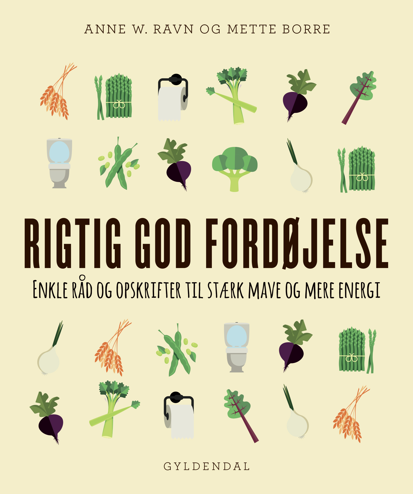

Madras Kylling Karry
Perfekt til en hyggelig aften derhjemme..
Ingredienser
- 2 spsk. olivenolie
- 2 spsk. hvidløgsinfunderet olivenolie
- 1 tsk kanel
- 1 spsk ingefær
- 1 tsk gurkemeje
- 1 tsk spidskommen frø
- 1 tsk malet koriander
- 1 tsk garam masala
- 1/2 tsk cayennepeber
- Kyllingelårfileter, skåret i halve
- 8 friske karryblade
- 2 mellemstore tomater, groft hakket
- 1/3 kop kokosmælk
- 1/4 kop koriander, groft hakket

Forberedelse

- Varm den almindelige olivenolie op i en stor gryde ved middel varme. Læg ingefær og kanel i gryden og kog i 1 minut. Tilsæt hvidløgsinfunderet olivenolie, gurkemeje, spidskommen, malet koriander, garam masala, cayenne og karryblade. Kog i 5 minutter under konstant omrøring.
- Tilsæt kyllingelårene til pels, og kog i 3 minutter. Rør de groft hakkede tomater i og kog i 15 minutter.
- Tilsæt kokosmælken og rør, lad det simre i 1-2 minutter, og fjern det derefter fra varmen.